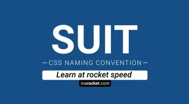

Es una convención de nomenclatura y estructura de código CSS para
crear interfaces web más escalables y mantenibles. Fue desarrollada
por Yandex, una empresa de tecnología rusa, y se ha vuelto muy popular
en la comunidad de desarrollo web debido a su enfoque claro y estructurado.
SUITCSS

SUITCSS es una metodología de diseño CSS y una colección de estilos
modulares que se enfoca en crear componentes web reutilizables y escalables. Su nombre, SUIT, proviene
de "Simple, Unencumbered, Interactive, and Testable" (Simple, sin obstáculos, interactivo y testeable),
reflejando sus principios fundamentales.